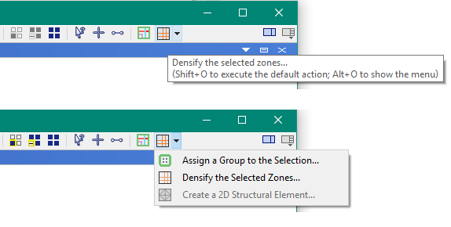
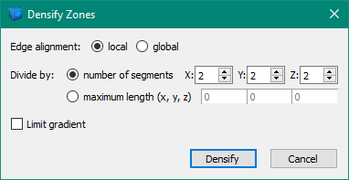

加密所选网格单元
在模型窗格工具按钮列表的末尾，有一个附带菜单的工具按钮。该菜单包含用于加密所选网格单元的命令。仅当选中一个或多个网格单元时才启用。


在模型窗格中选中网格单元后，可以选择“加密所选网格单元…”命令（ ），显示以下对话框。请注意，此对话框实现了 加密网格单元（
），显示以下对话框。请注意，此对话框实现了 加密网格单元（zone densify） 命令。
当前所选的网格单元将根据对话框中选择的参数被加密。


“划分倍数：”字段指示原始网格单元在该方向上将被划分成的网格单元数量。默认情况下，一个网格单元将在全部三个方向上各分成两份，从而产生 8 个新网格单元。在各方向使用不同值进行加密时请务必小心，因为这可能导致生成的网格不兼容。
或者，您可以选择“最大长度”，它会选取每个方向上的划分数量，直到生成的网格单元边长低于该值。
“边对齐”值决定“x”、“y”或“z”方向如何确定。默认情况下，网格单元的“x”方向相对于其特定方位是局部的。例如，“x”定义为从网格点索引 1 指向网格点索引 2 的方向。如果选择“全局”，则通过选取与全局 x 方向中的一条最接近的边，来确定该方向适用于哪条网格单元边。
最后，可以选择“限制梯度”选项。它会检测从一个网格单元到下一个网格单元是否发生多次网格单元加密，并加密那些相邻网格单元，以降低网格单元尺寸从一个网格单元到下一个网格单元减小的速度。
| 这些内容对您有帮助吗？… 版权与免责声明 |
FLAC3D © 2019, Itasca | 原文更新于 2020 年 10 月 8 日 |